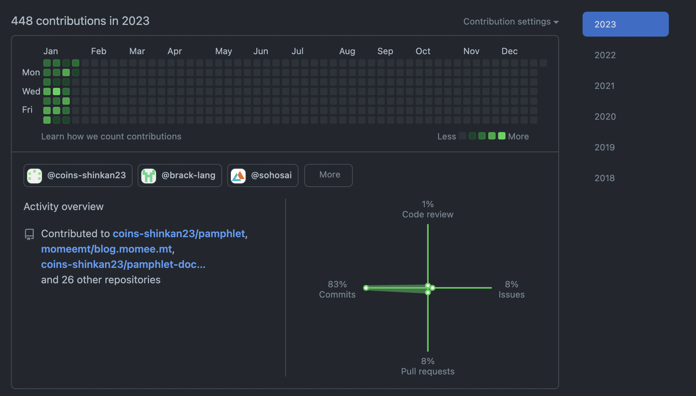

今週の日報
やったこと
- AREの最終発表
- ジョットクの最終発表
- 新歓会計
- 自分の範囲分の新歓パンフ執筆
- 新歓パンフ校正 + 組版
- シミュレーション物理 week1 レポート
- シミュレーション物理の授業を受けた
- 成績開示
- 局ミ
- 2年次の履修を組んだ
- コンロ周りの掃除
- お手洗いの掃除と整備
- 買い物
- SATySFiの勉強
GitHub
134 contributions
ほぼ新歓パンフ。もうちょっと...。来週までにはおおよそ作業が終わると思うので、jsysとか言語処理系とかの比重を増やしたい。あと、IPLabに連絡をとって来年のAREについて相談したい。
目標の振り返り
- 1日も組んでない
- 多分毎日見てた
- 知らん
- 知らん
反省
あ〜〜〜〜〜〜〜〜〜もうダメだ本当に。全然進捗ない
Sorted³、Todoist、Togglあたりは難しくないしなんか他のことできなくてもできる気がするので、来週は[1]できるといいですね。っていうかもう今月中にできればいいや。28日に急にやる気出してくれればそれでいいや。もうそれで。はいはい。いつもそう。
新歓パンフに結構リソース割いてるので技術書読めないのはまあ、仕方ない。秋C終わったら春休み入ってだいぶ時間ができると思うので、そこでコツコツ読んでおきたい。どうせまた時間なくなるので。SATySFi本とPMBOOK、薄い技術書あたりは今月中に読みたいけど、大丈夫そう？
結局スクボに戻した。好みだったので。
Haskell書き始めた。今週の唯一評価できるポイントです。以上です。
目標
- Sorted³で3日以上、次の日の日程を組む
- 新歓パンフレットの組版を終わらせる
- 3日以上は22:30までに寝る
- Create with Code - コードを使ってゲームを作ろうに取り組む
- The SATySFi bookを読み終える
- QRの土台を作る
- SOSのコードリーディングを進める
- HaskellでJSONパーサを書く
- OOSCを5章まで読む
- 詳解Rustプログラミングを読み終える
ちょっともう今週は無理しない方針で。疲れた。
脚注
- もう既に月曜日なんだけど、やってない